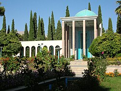

آرامگاه سعدی معروف به سعدیه مکان خاکسپاری سعدی، شاعر پارسیگوی است. این اثر را محسن فروغی طراحی کردهاست. این آرامگاه در انتهای خیابان بوستان و کنار باغ دلگشا در دامنهٔ کوه در شمال شرق شیراز قرار دارد. در اطراف مقبره، قبور زیادی از بزرگان دین وجود دارند که بنا به وصیت خود، در آنجا مدفون شدهاند. از جمله مهمترینهای آن میتوان شوریده شیرازی را نام برد که آرامگاهش به وسیله رواق به آرامگاه سعدی متصل شدهاست. آرامگاه شیخ مشرف الدین بن مصلح الدین سعدی شیرازی در تاریخ ۲۰ آبان ۱۳۵۳ به شمارهٔ ثبت ۱۰۱۰٫۳ در انجمن آثار ملی به ثبت رسیدهاست. لغتنامه دهخدا به نقل از فرهنگ برهان قاطع نام موضعی که شیخ سعدی در آنجا آرمیده را «گازرگاه» نامیده و به نقل از فرهنگ آنندراج گازرگاه را حد شیراز نزدیک به مرقد شیخ مصلحالدین سعدی شیرازی دانستهاست.[۱] سکههای پانصد ریالی برنزی جمهوری اسلامی ایران از سال ۱۳۸۷ خورشیدی به نقش آرامگاه سعدی مزین شدهاست و همچنین از سال ۱۳۸۹ اسکناسهای یکصد هزار ریالی با نقش آرامگاه سعدی در پشت آن چاپ شدهاست.
این مکان در ابتدا خانقاه سعدی بوده که وی اواخر عمرش را در آنجا میگذرانده و سپس در همانجا خاکسپاری شدهاست. برای اولین بار در قرن هفتم توسط شمسالدین محمد صاحبدیوانی وزیر معروف اباقاخان، مقبرهای بر فراز قبر سعدی ساخته شد.
در سال ۹۹۸ به حکم یعقوب ذوالقدر، حکمران فارس، خانقاه شیخ ویران گردید و اثری از آن باقی نماند. در سال ۱۱۸۷ ه. ق به دستور کریمخان زند، بنایی معروف به عمارتی ملوکانه از گچ و آجر بر بالای آرامگاه سعدی بنا گردید. طبقهٔ پایین دارای راهرویی بود که پلکان طبقه دوم از آنجا شروع میشد. در دو طرف راهرو دو اتاق کرسیدار ساخته شده بود. در اتاقی که سمت شرق راهرو بود، قبر سعدی قرار داشت و معجری چوبی آن را احاطه کرده بود. قسمت غربی راهرو نیز موازی قسمت شرقی، شامل دو اتاق میشد، که بعدها شوریده شیرازی (فصیح الملک) شاعر نابینای شیرازی در اتاق غربی این قسمت به خاک سپرده شد. طبقهٔ بالای ساختمان نیز مانند طبقه زیرین بود، با این تفاوت که بر روی اتاق شرقی که آرامگاه سعدی در آنجا بود، به احترام شیخ اتاقی ساخته نشده بود و سقف آن به اندازهٔ دو طبقه ارتفاع داشت.[۴]
